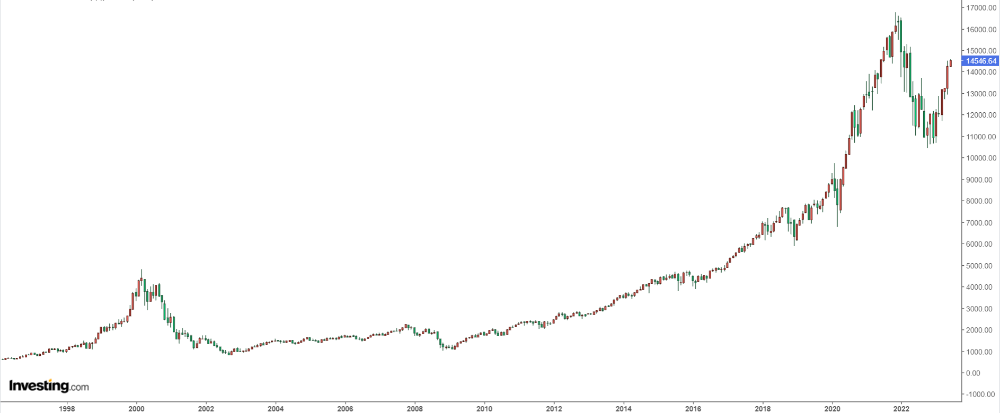

The Future Has Come
I read through a lot of thoughts about blockchain, and summarise them into this article. Which I hope to give a relatively objective view about blockchain and internet technologies in the future.
Turkeys on the Farm
Blockchain is all the rage these days. It seems like everyone is buying cryptocurrencies.
The quadrennial bull market, digital gold Bitcoin, red-hot IXOs, meme coins with hundredfold increases...
Hold on, let me check the calendar. It's May 2023... Looks like we're almost due for another bull market, if it comes on schedule. Last time was 2020, so maybe this time it'll be 2024.
But don't get too excited, let me tell you a story:
In a farm, there was a group of turkeys. The farmer fed them every day at 11 a.m. One turkey, the scientist of the flock, observed this phenomenon for almost a year without any exception.
So, it proudly announced its great discovery: every day at 11 a.m., food would arrive. The next day at 11 a.m., the farmer came again, and the turkeys were fed once more. Consequently, they all agreed with the scientist's law.
But on Thanksgiving Day, there was no food. Instead, the farmer came in and killed them all.
This story was originally put forth by British philosopher Bertrand Russell to satirize unscientific inductive reasoning and the abuse of induction.
Let's not talk about whether the bull market will come or not.
Instead, let's look at some similar situations from history and see what happened:
During the late '90s Internet bubble, the market experienced several ups and downs. In '96, '97, and '98, there were several fluctuations. The last and largest surge occurred from October '98 to March 2000 when the Nasdaq index rose from just over 2000 points to around 4900 points. This gradual climb instilled a resolute belief in speculators: no matter how badly the market falls, it will always bounce back.

As people went through several bull and bear cycles, this unwavering belief was further reinforced. When the real, prolonged bear market began, they continued to follow their own summarized experience, doubling down and buying at what they thought were the dips...

When the bubble burst, stock prices plummeted more than 50% in just a few days, with most stocks eventually losing 99% of their value and going straight to zero. Many people who had quickly become wealthy by leveraging their investments bet their entire net worth on bottom-picking during the bear market, only to end up losing everything.
The essence of the Internet is to reduce the cost of searching and interacting with information to almost zero, and on this basis, it has given birth to many highly scalable, highly profitable, and monopolistic business models that traditional economists cannot comprehend. However, many projects and ideas from the '90s were launched prematurely, before the necessary hardware and software infrastructure was in place, and before personal computers and broadband internet became widespread. As a result, they ended up failing miserably, like Webvan, founded in 1996 and bankrupt by 2001, with a total funding of around $800 million.
After the dot-com bubble burst in 2001, the maturation of infrastructure and the decrease in various costs led to the emergence of new applications (such as Taobao, YouTube, Netflix, Facebook, Amazon, AWS, iPhone, Uber, TikTok). Their explosive growth and massive scale far surpassed even the most pessimistic imaginations.
Similarly, a large number of overly advanced blockchain projects that cannot directly generate value for end users will eventually wither away, giving rise to various pessimistic and negative emotions.
However, once the infrastructure matures, many of the boasts and dreams of the past will ultimately be realized by entrepreneurs who appear at the right time and place.
When bitcoin was viewed as an Internet payment in 2014, the actual throughput of bitcoin could not support payment when shopping in supermarkets. Ethereum initially called itself "a world computer". Many initially believed that Ethereum could replace Bitcoin because it had programmability. But this is actually a misconception, which can also easily lead to another mistaken view: That another next-generation smart contract platform is the killer of Ethereum, just because it provides more scalability.
Similarly, just as Ethereum cannot replace Bitcoin, the next "cloud service" blockchains are also unlikely to kill Ethereum, but expand adjacent possibilities and carry different applications, utilizing their unique characteristics. This does not mean that Bitcoin and Ethereum have established their position permanently. Bitcoin and Ethereum also have their own existing problems. More advanced technology does not necessarily replace existing technology, but is more likely to create a complex, specialized tech stack.
Today's use of Ethereum is not computing, but as a battle-tested, slow and secure computer for token-based applications such as crowdfunding, lending, digital companies and voting in the world's accounting system. Even if the Ethereum network is a bit congested, Gas is super expensive and it takes a few minutes to complete a transaction, these Dapps can still compete with banks, shareholder voting and securities firms.
Because these smart contracts allow completely free transactions between strangers without going through centralized institutions, and make the large personnel establishments of centralized institutions redundant. Automated market makers on Ethereum, like Uniswap, have only about 20 employees, currently worth about 20 billion. In comparison, Intercontinental, the parent company of the New York Stock Exchange, has nearly 9,000 employees and a market value of over $600 billion. Renowned blockchain investor Raoul Pal estimates that the global user base of blockchains is currently growing at over 110% per year, while global Internet users grew only 63% in 1997. Even following the trajectory of Internet development after 1997, the global user base of blockchains will grow from the current approximately 200 million to around 430 million by 2030.
Blockchain technology's essence is to reduce the barriers and costs of value exchange between global individuals and machines to almost zero.
However, Ethereum currently does not achieve this vision and ultimately still requires the maturity and popularity of various infrastructures.
Imagine what it would look like if blockchain technology successfully solves scalability, security and usability issues. Eventually there may be only a few public chains that can represent the future and go worldwide, carrying the decentralized dreams of people around the world.
Blockchains sit at the intersection of three major themes in modern society: technology, finance and democracy. Blockchains are a technology that uses the progress of encryption and computing to "democratize" money and many aspects of our daily lives. Its purpose is to improve the way our economy works, make it easier for us to control our own information, data and ultimately take control of our lives. In this tech age, this is what democracy should look like. We often hear people complain about tech giants (like Apple, Google and Facebook) snooping on our privacy data. The best way to solve this problem and give power back to the people.
The Coachman and the Driver
The Coachman and the Driver History repeats itself in a spiral ascent:
Now everyone can drive cars as long as they have money to buy one. 🚗
In the past, everyone could ride horses as long as they had money to buy one. 🐎
So the car is just a means of transportation for this era. In the future, people may rarely drive cars. Similar to how people ride horses now, only at riding clubs and some tourist spots. After self-driving technology matures, people will not need to drive at all, and those who can drive will become fewer and fewer. One has to go to racetracks to experience the joy of driving.
In the ancient times there were common horses, blood horses, war horses, and racetracks.
Now there are common cars, supercars, tanks, and racetracks.
Horses did not disappear, they were just replaced by cars.
When cars first appeared, they were looked down upon and hated for a long time due to noise, slow speed, frequent accidents, often breaking down, lack of gas stations, and lack of parking lots. Later, as more roads were built, more gas stations emerged, cars improved in quality, traffic rules were promoted, and horse carriages were completely replaced.
Tesla nowadays works the same way: it runs out of power quickly; catches fire; the autopilot drives into the sea or into trees; lacks charging poles; brake failures are exaggerated by the media to be a joke, oh no, it has become a laughing stock and meme. When the battery life extends, self-driving algorithms improve, charging poles become more common, and charging time shortens, what can oil cars do? 😄 Moreover, electricity will become cheaper and cheaper with technological progress, through solar, wind, geothermal, and eventually controlled nuclear fusion...
The negative media coverage to attract eyeballs is also an obstacle for people to objectively recognize new things. In order to attract attention, the media selectively reports negative news about new inventions much more than positive reports, especially for new things. When the iPhone came out, the media first ridiculed the Apple fans as brainwashed, then accused people of selling kidneys to buy phones, and then attacked the poor signal.Every time a Tesla catches fire, experiences brake failure, or gets into an accident, there are always people who are inexplicably happy about it, without objectively comparing the accident rate with other cars. While people curse the various problems of shared bicycles, they fail to notice that shared bicycles are changing the commuting habits of urbanites, reducing gasoline consumption, and even affecting real estate prices.
Constant bombardment of negative news makes it almost impossible for most people to really delve into and study the full logic behind new things. Judging that a technology has no future because of its current limitations is like continuing to burn oil lamps for fear of the danger of electric shock. In fact, oil lamps also have the risk of fire! If we can remain objective and curious, we will have many different views on the world, especially in this era of rapid technological development.
Similarly, many people do not understand the underlying operating principles of IC, do not know the innovations of Chain Key cryptography, do not know that IC solves the scalability problem, do not know BLS threshold signatures, and do not know IC's consensus algorithm. It is difficult to truly understand the concept of IC because it is a completely new and complex system without analogies. Even for those with a computer background, it takes months to fully and deeply understand all the concepts by delving into various forums, collecting materials, and keeping up with new developments every day. If you are just looking for short-term benefits and blindly following the trend, investing in ICP at the price peak and then labeling this thing as "scam" or "garbage" because of huge losses and lack of understanding is very natural. All the losing retail investors become disappointed and gradually join the FUD army on social media, leading more people who do not understand IC to develop prejudices. More importantly, people often do not know the information they missed due to ignorance. Individual prejudices are common. Each person has different learning and life experiences and different thinking models, which will automatically ignore things that they are not interested in or do not understand.
For more related reading: Were attacks on ICP initiated by a master attack — multi-billion dollar price manipulation on FTX? How The New York Times promoted a corrupt attack on ICP by Arkham Intelligence ,Interview with DFINITY: ICP is a victim of SBF's capital operation; much of the future of Web3 is in Asia.
Human society's productivity moves forward in cycles:
A new technology emerges → A few people first come into contact with and try it → More people are hired to develop and maintain this technology → Organizations (companies or DAOs) grow and develop → More and more people start to try it and improve productivity → Until another new technology sprouts, trying to solve problems and facilitate life in a more advanced and cutting-edge way → Old organizations gradually decline and die (those that change faster die faster, those that do not change just wait to die, and a few organizations can successfully reform) → A large number of employees lose their jobs and join new jobs → New organizations continue to grow and develop...until one day! People really don't have to do anything at all, fully automated, abundant materials...life is left with enjoyment only~
The essence of blockchain technology is that innovation can be carried out by everyone without the review and approval of authoritative institutions. Anyone can protect their rights and interests through blockchain technology without infringement by the powerful. Everyone is equal in cryptography. As long as the private key is properly kept, personal assets can be fully controlled by themselves without relying on anyone's custody.
Visa's TPS is 2400, Bitcoin's is 7. Even at Bitcoin's slow speed, it has gained the support of enthusiasts, organizations and some governments around the world. If the previous centralized applications, such as Telegram and Dropbox, can be transferred to a decentralized blockchain, what kind of scenario would that be? Productivity will definitely be improved.
Despite the widespread application and development of blockchain technology in recent years, there are still some obvious drawbacks. One of the main issues is scalability. As blockchain technology is widely applied in areas such as digital currencies, smart contracts, and supply chain tracing, the transaction and data volume in blockchain networks are growing rapidly, presenting significant challenges to the scalability of the blockchain. The current blockchain architecture faces problems such as low throughput and high latency, making it difficult to support large-scale application scenarios. This is because the traditional blockchain technology adopts distributed consensus algorithms, which require all nodes to participate in the process of block verification and generation, thus limiting the network throughput and latency. Additionally, as blockchain data is stored on each node, data synchronization and transmission can also become bottlenecks for scalability.
Therefore, solving the scalability problem of blockchain has become one of the important directions for the development of blockchain technology. Researchers have proposed many solutions to improve the throughput and latency performance of blockchain networks, such as sharding technology, sidechain technology, and Lightning Network. These technologies are designed to decompose the blockchain network into smaller parts, allowing for separate processing of transactions and data, and can be interoperable through cross-chain communication protocols. Through these innovative technologies, blockchain scalability can be improved to better meet the needs of actual application scenarios.
Once blockchain solves the problems of scalability and throughput, achieves breakthroughs in underlying technology, it may become the new infrastructure of the Internet and reshape the future Internet landscape.
Dfinity elected to reinvent blockchain's underlying technology, developed a superior decentralized network service through innovation, and fostered more Dapps to cultivate an entirely new decentralized Internet ecosystem.
This realm is so novel, encompassing such a vast knowledge domain, that no one person reigns supreme. Success springs from observing broadly, learning ceaselessly. Only then unveils insights inaccessible and incomprehensible to most.
Continue reading Dominic's story.